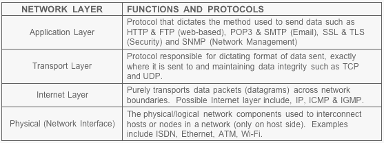
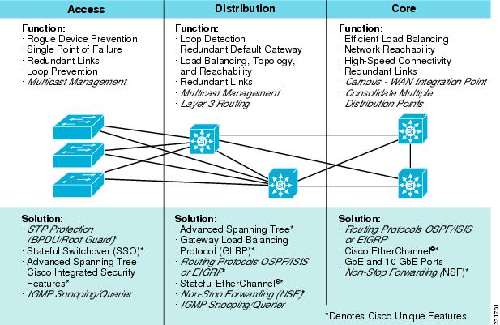

Computer Network Management:
Chapter 3
TCP/IP
• The TCP/IP model explains how the protocol suite works to provide communications
It has Four layers: Application, Transport, Internetwork, and Network Interface

• Application Layer:-File Transfer Protocol (FTP)
-Trivial File Transfer Protocol (TFTP)
-Network File System (NFS)
-Simple Mail Transfer Protocol (SMTP)
-Terminal emulation protocol (telnet)
-Remote login application (rlogin)
-Simple Network Management Protocol (SNMP)
-Domain Name System (DNS)
-Hypertext Transfer Protocol (HTTP)
• Transport Layer:
Performs end-to-end packet delivery, reliability, and flow control
Protocols:
-TCP provides reliable, connection-oriented communications between two hosts
-Requires more network overhead
-UDP provides connectionless datagram services between two hosts
-Faster but less reliable
-Reliability is left to the Application layer
Ports:
-TCP and UDP use port numbers for communications between hosts
-Port numbers are divided into three ranges:
-Well Known Ports are those from 1 through 1,023
-Registered Ports are those from 1,024 through 49,151
-Dynamic/Private Ports are those from 49,152 through 65,535
TCP sliding windows:
-Control the flow and efficiency of communication
-Also known as windowing
-A method of controlling packet flow between hosts
-Allows multiple packets to be sent and affirmed with a single acknowledgement packet
-The size of the TCP window determines the number of acknowledgements sent for a given data transfer
-Networks that perform large data transfers should use large window sizes
• Internetwork Layer:
Four main protocols function at this layer
-Internet Protocol (IP)
-Internet Control Message Protocol (ICMP)
-Address Resolution Protocol (ARP)
-Reverse Address Resolution Protocol (RARP)
ARP:
A routed protocol
Maps IP addresses to MAC addresses
ARP tables contain the MAC and IP addresses of other devices on the network
Reverse Address Resolution Protocol (RARP):
Similar to ARP
Used primarily by diskless workstations
Which have MAC addresses burned into their network cards but no IP addresses
Client’s IP configuration is stored on a RARP server
• Network Interface Layer:
-Plays the same role as the Data Link and Physical layers of the OSI model
-The MAC address, network card drivers, and specific interfaces for the network card function at this level
-No specific IP functions exist at this layer
-Because the layer’s focus is on communication with the network card and other networking hardware
• The Cisco Three-Layer Hierarchical Model:
Does not describe how communications take place
Focuses on how best to design a network
Especially a relatively large network or one that is expected to grow
Each layer of the model is involved in specific functions
Is typically defined by a particular type of device
The three layers of the model from bottom up are Access, Distribution, and Core
